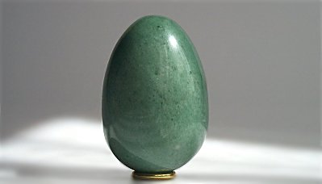
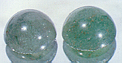
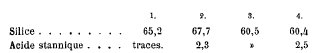
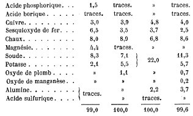
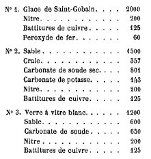
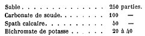
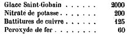
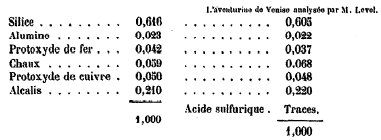
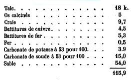
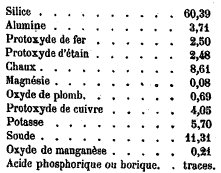

Nous reproduisons ci-dessous plusieurs articles qui ont paru au siècle dernier sur l'aventurine, en commençant par un extrait d'un traité sur le verre dû à E. Péligot. Le lecteur se rendra compte rapidement que la préparation de ce verre singulier présente des rapports avec la préparation de la pierre philosophale et notamment lors du processus que les alchimistes appellent la projection.1)- extrait de : Le Verre, son histoire, sa fabrication, Eugène-Melchior Péligot, Masson, 1877
Le verre qu'on désigne sous le nom d'aventurine, soit à cause de sa ressemblance un peu lointaine avec le quartz aventurine, soit parce que sa découverte a été faite par hasard, par aventure, est aussi d'origine vénitienne ; sa fabrication se fait à Murano, dans deux ou trois verreries, à l'aide de procédés qu'on tient secrets. Aussi ce verre, dont on ne fait à dessein qu'une petite quantité, se maintient au prix élevé de 10 à 20 francs le kilogr., selon la qualité [au XIXe siècle]. L'aventurine est un verre jaunâtre, dans lequel se trouve disséminée une infinité de petits cristaux

FIGURE I
(aventurine)tétraédriques très nets et très brillants; ce sont des cristaux de cuivre, de protoxyde de cuivre ou de silicate de cet oxyde. Lorsqu'il est poli, il offre, à la lumière surtout, un aspect chatoyant qui le fait employer dans la bijouterie. Ces cristaux se sont produits au sein de la matière vitreuse quand elle était à l'état liquide. Comme parmi les nombreux éléments qui composent ce verre on rencontre le cuivre, le fer et l'étain [comme on le voit, il s'agit des trois métaux les plus cités par Fulcanelli et E. Canseliet], il est très probable que c'est à la réduction de l'oxyde de cuivre [il s'agit d'un transfert : en terme hermétique, on pourrait dire que Jupiter ou Mars s'empare du sceptre de Vénus] par ces deux derniers métaux qu'on doit attribuer cette cristallisation. Beaucoup de tentatives ont été faites pour découvrir le tour de main sur lequel repose cette fabrication. Un habile chimiste, M. Hautefeuille, est arrivé, par des essais persévérants, à fabriquer ce verre en assez grande quantité ; il a publié dans le bulletin de la Société d'encouragement (octobre 1860) [puis aux Comptes rendus de l'Académie des sciences] un mémoire dans lequel il indique libéralement les procédés qu'il a suivis :
Note sur la production de l'aventurine artificielle, par MM. FREMY et CLEMANDOT [Comptes rendus Acad. Sci, t. XXII, 1846].
" Quoique la fabrication des verres colorés soit nouvelle en France, elle est arrivée dans ces derniers temps à un tel degré de perfection, que les cristaux qui sortent de nos verreries peuvent, dans bien des cas, lutter avantageusement avec ceux qui sont fabriqués en Bohême. Il existe cependant un produit que l'on n'était pas encore parvenu à fabriquer en France, nous voulons parler de l'aventurine artificielle, qui jusqu'à présent ne se fait qu'à Venise, et dont la fabrication est tenue entièrement secrète. Les beaux échantillons d'aventurine de Venise sont tort rares et se vendent jusqu'à 100 francs le kilogramme.L'aventurine a été souvent analysée ; voici la composition de quelques échantillons :
Nous avons pensé qu'il serait intéressant de trouver le secret de cette fabrication et de donner à nos habiles verriers un produit qui, dans leurs mains, deviendrait précieux pour la confection des objets d'art. C'est dans ce but que nous avons réuni nos efforts; et, après de nombreux essais qui ont été exécutés à la cristallerie de Clichy, nous avons été assez heureux pour obtenir des résultats qui, sans être parvenus peut-être à leur dernier degré de perfection, sont de nature cependant à faire espérer que désormais l'aventurine se fabriquera en France.
Comme nous désirons donner le plus tôt possible à l'industrie de notre pays un produit qui lui manquait, nous nous empressons de faire connaître notre procédé de fabrication de l'aventurine, en appelant de tous nos voeux les perfectionnement que la pratique pourra lui donner.
Des analyses chimiques, faites principalement par MM. Wölher et Barreswil, avaient démontré que l'aventurine de Venise était composée d'un verre tendre tenant en suspension du cuivre métallique et cristallisé. Il s'agissait donc, pour obtenir l'aventurine, de faire cristalliser du cuivre dans du verre fondu, et de faire en sorte que les cristaux métalliques restassent disséminés dans la masse vitreuse. Or, lorsqu'on connaît l'oxydabilité du cuivre, sa fusibilité, et qu'on apprécie toutes les circonstances qui peuvent s'opposer à la cristallisation du métal et à la répartition égale de ses cristaux dans le verre en fusion, on comprendra toutes les difficultés que nous avions à surmonter.
Le choix du composé qui, par l'action de la chaleur, devait donner naissance à du cuivre métallique n'était pas moins difficile. Nous devions élirniner, en effet, les corps qui, pour produire du cuivre, auraient exigé une température trop basse ou trop élevée; car, dans le premier cas, le métal s'agglomérait avant la fusion du verre ; dans le second, il entrait en fusion, se séparait du verre et se rassemblait en culot au fond du creuset [c'est ce que les alchimistes appellent « brûler les fleurs »]. Nous ne pouvions aussi nous arrêter aux réactions qui, en produisant du cuivre métallique, donnaient naissance à un dégagement de gaz abondant ou bien à un dépôt d'un corps coloré ou insoluble dans le verre. Il fallait donc trouver un composé qui, à la température de la fusion du verre, donnât naissance à du cuivre métallique. Après avoir essayé sans succès l'action des différents métaux sur les verres colorés par l'oxyde de cuivre, nous avons été conduits à examiner la réduction que les oxydes au minimum d'oxydation peuvent faire éprouver au protoxyde de cuivre, et notre attention s'est principalement fixée sur celle que l'oxyde de fer des battitures exerce sur le protoxyde de cuivre. Nous avons vu que, sous l'influence de la chaleur, l'oxyde de fer des battitures ramène rapidement le protoxyde de cuivre à l'état de cuivre métallique en passant lui-même à l'état de peroxyde de fer. Or, cette réaction nous a paru éminemment propre au but que nous nous proposions ; elle donne naissance, en effet, à du cuivre pur, et elle offre l'avantage de produire un oxyde métallique (le peroxyde de fer) qui est soluble dans le verre, et qui ne lui donne qu'une coloration légèrement jaunâtre [on voit par là tout l'intérêt qu'il y a à considérer le sesqui-oxyde de fer ainsi que le fait remarquer E. Canseliet dans son Alchimie expliquée sur ses Textes classiques]. La formation du silicate de peroxyde de fer nous paraissait même une circonstance heureuse ; car, en donnant de la densité au verre, ce silicate devait s'opposer naturellement au dépôt des cristaux métalliques.
C'est donc avec confiance que nous avons essayé de reproduire l'aventurine de Venise en chauffant un mélange de verre, de protoxyde de cuivre, et d'oxyde de fer des battitures. L'expérience est venue confirmer nos prévisions. En chauffant, en effet, pendant douze heures un mélange de 300 parties de verre pilé, de 40 parties de protoxyde de cuivre et de 80 parties d'oxyde de fer des battitures, et en le soumettant ensuite à un refroidissement très lent, nous avons obtenu une masse vitreuse qui contenait d'abondants cristaux de cuivre métallique. Le point le plus difficile de la fabrication de l'aventurine, qui, selon nous, consiste à produire un verre contenant dans sa masse des cristaux brillants de cuivre et uniformément répartis, nous paraît donc complétement résolu. Les échantillons d'aventurine que nous présentons aujourd'hui à l'Académie, offrent encore une certaine opacité qui nuit à l'éclat des cristaux métalliques, et ces cristaux aussi ne nous paraissent pas assez volumineux; mais les expériences que nous tentons en ce moment nous donnent tout lieu de croire que nous pourrons, dans quelques jours, présenter des produits complètement satisfaisants.

FIGURE II
(échantillons d'aventurine)Pour nous convaincre de l'identité de notre aventurine avec celle qui se fabrique â Venise, nous les avons examinées comparativement avec un excellent microscope que M.Oberhaeuser a bien voulu mettre à notre disposition, et nous avons reconnu que, dans l'une et dans l'autre, le cuivre était cristallisé en octaèdres réguliers. Ainsi, dans notre aventurine, le cuivre est dans le même état que dans celle de Venise.
Nous n'avons pas voulu traiter dans cette Note les différentes questions théoriques qui se rapportent à la production de l'aventurine et rechercher, par exemple, si la réduction du cuivre doit être attribuée à l'action directe de l'oxyde de fer des battitures ou du fer métallique qu'il contient souvent, sur le protoxyde de cuivre ; ou bien à la formation d'un silicate de protoxyde de fer, qui, en agissant sur le silicate de protoxyde de cuivre, produirait du cuivre métallique.
Nous aurions aussi à faire connaître plusieurs faits intéressants qui sont relatifs à l'action des métaux sur le verre en fusion ; mais nous nous réservons de traiter ces différents points dans une prochaine communication, qui contiendra, en autre, les résultats de nos expériences sur la réduction des oxydes de cuivre et de leurs silicates par le protoxyde d'étain, les sels ammoniacaux et les substances organiques. "


FIGURE III
(composition de 4 aventurines)D'après M. Hautefeuille, on obtient l'aventurine en fondant l'un des mélanges suivants :

FIGURE IV
(éléments de synthèse de l'aventurine)Quand le verre est bien liquide, on ajoute 38 parties de fer ou de fonte en tournure fine enveloppée dans du papier
[c'est ce point précis qui prend une importance majeure ; il se rapproche en effet des récits des pseudo transmutations métalliques où, à chaque fois, les témoins rapportent que la poudre de projection était enveloppée dans de la cire ou dans du papier soit disant parce que, sinon, les vapeurs émanées du métal en fusion auraient annulé les effets de la pierre philosophale...notons que ce papier est incorporé à la masse vitreuse grâce à une tige de fer et non à sa surface où l'effet serait évidemment nul ; là encore, les alchimistes se contentaient de jeter leur poudre de projection sans l'inclure dans la masse en fusion];
on les y incorpore en maclant le verre au moyen d'une tige de fer rougie
[notez que Hautefeuille précise ailleurs que le corps que l'on jette dans le creuset peut être du fer, du charbon, de la pyrite de fer, du cuivre métallique, de l'étain, du zinc, du cobalt et du manganèse métallique, pourvu qu'il ramène le bioxyde de cuivre à l'état de protoxyde ; on aura toujours de l'aventurine par un refroidissement lent].
Le verre devient rouge de sang, opaque, et en même temps pâteux et bulleux ; on arrête le tirage du fourneau, on ferme le cendrier, on couvre de cendres le creuset muni de son couvercle, et on laisse refroidir très lentement. Le lendemain, en cassant le creuset, on trouve l'aventurine formée. On obtient ainsi, à chaque opération, du verre parsemé de cristaux. Néanmoins le produit commercial est difficile à produire à cause de la répartition irrégulière de ces cristaux dans la masse. Celle-ci est tantôt trop veinée, tantôt cristallisée trop finement, quelquefois trop chargée de bulles qui donnent à la taille des points et des cavités. On admet généralement que, dans ce verre, les cristaux sont du cuivre à l'état métallique. Cependant, d'après. M. Levol, ce métal s'y trouverait sous forme de silicate de protoxyde. Ce chimiste a constaté qu'en traitant l'aventurine en poudre par une dissolution bouillante de potasse, elle se dissout complètement ; si on s'arrête au moment où la masse vitreuse est seule dissoute, on obtient un résidu violet qui verdit à l'air; et si, après avoir recueilli les cristaux, on les traite par un sel mercuriel, ils ne deviennent pas blancs, ainsi que cela arriverait si le cuivre s'amalgamait avec le mercure, ce dernier métal devant se précipiter en présence du cuivre. Comme ils ne changent pas de couleur, M. Levol et M. Hautefeuille admettent que ces cristaux sont formés de silicate de protoxyde de cuivre. Cette conclusion ne semble pas se concilier avec le fait suivant observé par M. Hautefeuille : la matière cristallisée de l'aventurine est soluble dans l'ammoniaque ; la dissolution, qui est incolore, devient bleue au contact de l'air. Ce sont là les caractères du cuivre et du protoxyde de cuivre. Il n'est pas vraisemblable que le silicate formé par cet oxyde, s'il existe, soit soluble dans l'ammoniaque.
Les verres de cuivre ont été étudiés récemment par M. Pettenkofer et par M. P. Ebell. Le premier de ces chimistes s'est particulièrement occupé du verre hématin (hématinone des anciens) qu'il est arrivé à reproduire ; il a constaté que le flux rouge brun qui le produit ne passe à l'état de verre rouge opaque que par une opération subséquente qui consiste à le chauffer longtemps jusqu'à son point de ramollissement : Il en est de même pour l'aventurine ; la matière fondue est sans paillettes cristallines et c'est pendant le refroidissement que les cristaux apparaissent. La formation de ces deux verres serait due, d'après lui, à la cristallisation d'un silicate de protoxyde de cuivre ; il admet que dans la matière récemment fondue ce corps est à l'état amorphe. Dans le verre pourpre des vitraux, ce silicate existerait également, mais en cristaux tellement petits qu'ils ne sont pas visibles, même au microscope.
Le verre hématin des anciens s'obtient en fondant du cristal avec 9 pour 100 d'oxyde de cuivre et de battitures de fer, de manière à produire un flux de couleur hépatique, aussi homogène que possible, qu'on laisse se solidifier et qu'on expose ensuite pendant plusieurs heures à la température laquelle ce verre commence à se ramollir : c'est par ce réchaufage prolongé que se développent la couleur rouge et l'opacité du verre. L'examen microscopique de l'hématinone de Pettenkofer, fait avec un fort grossissement, a montré à M. Ebell que ce verre doit sa couleur et son opacité à un précipité cristallin, très abondant, qui paraît être le même que celui de l'aventurine, avec cette différence que dans celle-ci les cristaux sont beaucoup plus volumineux et relativement clairsemés.
L'hématinone est le produit d'une cristallisation dans un verre demi-mou et presque solide ; l'aventurine est formée par les cristaux abandonnés par un verre liquide : lorsque ces cristaux sont formés, le verre ne contient plus de cuivre disponible, de sorte que, pendant un refroidissement lent, il ne se produit pas d'hématinone.M. Ebell a cherché à établir que, conformément à l'opinion de M. Woehler, l'aventurine renferme le cuivre à l'état métallique : pour démontrer la véritable nature des cristaux, il fallait trouver, dit-il, un réactif tel que, tout en offrant un indice certain de la présence du cuivre métallique, ce réactif rendit impossible l'altération de ce métal. Une solution de nitrate d'argent dans l'alcool absolu présente, d'après lui, cette propriété. De l'aventurine en poudre trés fine est mise en contact avec cette solution pendant plusieurs jours ; le liquide, acidulé et évaporé à siccité, se colore franchement en bleu par l'ammoniaque. Le résidu de la filtration contient une certaine quantité d'argent précipité. « Il est donc certain, ajoute l'auteur, que la solution alcoolique d'argent dissout du cuivre, tandis que de l'argent métallique se précipite dans la poudre vitreuse. Les cristaux de l'aventurinene peuvent donc être que du cuivre métallique.»
Cette conclusion ne me parait pas rigoureuse. J'ai constaté, en effet, en répétant cette expérience, que le protoxyde de cuivre précipite également l'argent de ses dissolutions, le cuivre prenant dans la liqueur la place de ce métal. Le résultat est donc le même, que les cristaux soient du cuivre ou du protoxyde de cuivre ; si le silicate de ce dernier oxyde existe, il est assez probable qu'il agirait de la même façon sur la dissolution d'argent.
La question reste donc indécise, à mon sens ; néanmoins, à défaut de preuves directes, il est fort vraisemblable que le cuivre métallique, de même que l'or et l'argent, possède la propriété de se dissoudre dans les matières vitreuses en leur donnant, comme aussi le soufre et le charbon, une coloration particulière. Je ne suis pas convaincu, d'ailleurs, qu'à l'état de couche extrêmement mince, l'hématinone ne soit pas aussi la matière colorante du verre pourpre des vitraux ; quant à l'aventurine, ce produit renferme le cuivre dans les conditions qui donnent également naissance à la cristallisation de divers oxydes dans les flux, conditions étudiées par Ebelmen et tout récemment par M. Ebell pour les oxydes d'étain, de chrome, de fer, de manganèse et d'aluminium.Aventurine de chrome. - Cette sorte de verre a été obtenue, en 1865, par M. Pelouze. On sait que le sesquioxyde de chrome communique une couleur verte aux fondants et particulièrement au verre ; le bichromate de potasse jouit de la même propriété, en produisant du sesquioxyde ; ce corps, lorsqu'il est en quantité suffisante, donne tout à la fois la coloration verte transparente et les cristaux qui restent en suspension dans la masse vitreuse. On obtient ce produit en fondant :

FIGURE V
(aventurine au chrome)Ce verre contient 6 à 7 pour 100 d'oxyde de chrome dont la moitié à peu prés est combinée avec le verre et l'autre moitié reste à l'état de liberté, sous forme de cristaux brillants. Avec 50 parties de bichromate de potasse, la fusion du verre devient très difficile. L'aventurine de chrome est plus dure que le verre à vitre et surtout que l'aventurine de Venise ; comme cette dernière, elle peut être employée pour faire des bijoux et des objets de fantaisie.
2)- Théorie de la formation du verre d'aventurine au cuivre ; note de M.V. AUGER
Le verre d'aventurine au cuivre est constitué par une masse transparente verdâtre, qui est parsemée d'une multitude de petits cristaux formés de cuivre métallique, d'après la plupart des chimistes, d'oxydule ou de silicate d'oxydule de cuivre, d'après Hautefeuille et d'après Pettenkofer. Cette dernière opinion était basée sur les faits suivants. Les cristaux cuivrés de l'aventurine ne blanchissent pas sous l'action des sels de mercure. Ce verre fondu à haute température ne fournit pas de régule de cuivre. L'ammoniaque, à 100°, en vase clos, dissout une quantité notable de sel cuivreux, fournissant une solution incolore. Ces faits s'expliquaient en admettant comme Pettenkofer que l'aventurine est un verre coloré en vert par du silicate ferreux, contenant des cristaux rouges de silicate de protoxyde de cuivre, et communiquant un ton jaune-d'or à ceux-ci par combinaison des deux nuances. L'opinion qui attribue au cuivre métallique l'éclat de l'aventurine a été soutenue par Ebell et par Sulkoski. Le premier de ces savants a constaté l'identité de forme du cuivre cristallisé et des cristaux d'aventurine ; il a constaté que le nitrate d'argent, en solution alcoolique, déplace ce métal à froid et admet que le cuivre est dissous directement dans le verre incandescent, et cristallise par refroidissement lent ; cependant, il constate que le cuivre, introduit à l'état de métal dans le verre, ne se dissout qu'à peine.
Sulkowski, après avoir remarqué que la masse transparente est d'un bleu verdâtre, dû probablement à du silicate de fer, établit d'une façon très nette la nature métallique des cristaux, en chauffant à 100° le verre pulvérisé avec une solution faible de sulfate de cuivre ammoniacal. Cette solution se décolore, ce qui ne pouvait avoir lieu avec un sel cuivreux, mais bien avec le métal lui-même. Ce savant admet difficilement la solubilité du cuivre dans le verre incandescent, et se demande comment le métal a pu entrer d'abord en solution dans la masse vitreuse.
Rappelons que le verre d'aventurine incandescent, refroidi brusquement, reste transparent, et que par réchauffement il devient trouble, rouge, par dépôt de cuivre finement divisé.
J'avais été frappé, en étudiant le phosphate cuivreux, de l'identité d'aspect de la masse refroidie, parsemée de cristaux de cuivre, avec l'aventurine. Examinés au microscope, les cristaux sont de même taille, et leurs formes sont absolument semblables. De plus, le phosphate cuivreux fondu, refroidi brusquement par le chlorure de méthyle, fournit un verre transparent d'où le cuivre ne se sépare qu'au bout de quelques semaines, ou immédiatement par réchauffement de la masse.Admettons un instant que l'aventurine fondue est constituée par un silicate cuivreux possédant les propriétés du phosphate, c'est-à-dire stable au rouge, et se scindant par refroidissement lent en cuivre métallique et silicate cuivrique bleu. Toutes les propriétés énumérées précédemment se trouvent immédiatement expliquées : pas de séparation de culot métallique à la fusion, solution ammoniacale cupreuse par dissolution d'une partie du cuivre et de silicate cuivrique attaqué par l'alcali à 100°, couleur verdâtre de la masse transparente, provenant du mélange des nuances de silicates ferrique et cuprique.
Mon attention a été attirée sur deux points :
1° j'ai cherché à isoler des cristaux de cuivre, en nature, en les séparant de leur gangue silicatée et
2° j'ai dosé le silicate cuivrique, qui, d'après ma théorie, devait se trouver dans l'aventurine en quantité au moins équivalente au métal déposé, et dont aucun auteur n'avait parlé jusqu'ici, l'attention des chimistes n'ayant pas été attirée sur ce point, essentiel dans cette explication.
On parvient à isoler une partie des cristaux de cuivre en traitant à froid la poudre d'aventurine par l'acide fluorhydrique dilué. Le cuivre flotte dans la liqueur et peut être séparé par décantation ; après lavage à l'eau et à l'alcool on en obtient une petite quantité bien séparée du verre et possédant toutes les propriétés du métal. D'autre part, j'ai effectué le dosage du cuivre à ses différents états, dans la poudre d'aventurine. 4 g de produit m'ont fourni : 1° par traitement au nitrate d'argent alcoolique, 0,034 g de cuivre ; 2° par l'action de l'acide nitrique dilué, 0.018 g de cuivre.
Après ces traitements, la poudre résiduelle, examinée au microscope, était absolument transparente et ne contenait pas de cristaux métalliques. On l'a attaquée à l'acide fluorhydrique et trouvé, par précipitation du métal, 0.08 g de cuivre. Il y avait donc dans ce verre 1,3 pour 100 de cuivre à l'état métallique et 2 pour cent de cuivre à l'état de silicate cuivrique.
On est donc en droit de peser les conclusions suivantes : l'aventurine en fusion contient du silicate cuivreux ; celui-ci se scinde par refroidissement en cuivre métallique cristallisé et en silicate cuivrique, qui communique à la masse une couleur verdâtre par son union avec la nuance jaune du silicate ferrique. Dans l'aventurine transparente brusquement refroidie, le cuivre reste dissous sous forme de silicate cuivreux, qui ne se scinde que par réchauffement en métal et silicate cuivrique. Il sera curieux de voir si cette explication est applicable aux verres à l'or.
3)- Expériences de Paul Hautefeuille
a)- expérience préalable
Voici la partie la plus importante du mémoire de ce savant chimiste :
« Plus heureux que mes prédécesseurs, dès 1841 je suis parvenu. non sans peine, à obtenir ce produit, et, comme on a pu s'en convaincre, sous un assez gros volume, par les échantillons qui out été mis à l'Exposition universelle de 1855, et pour lesquels j'ai obtenu une mention honorable. Mes occupations ne me permettant plus de me livrer à cette fabrication, je viens remplir la promesse que je faisais à l'Académie des sciences dans sa séance du 2 mars 1846, et donner la théorie qui m'a servi à trouver le tour de main pour obtenir sûrement un verre aventuriné, et je serai heureux d'apprendre que, par ce que je vais dire, j'aurai aplani la route à un successeur. Ma théorie est que les cristaux triangulaires et hexagonaux qui se trouvent dans l'aventurine, et qui lui donnent sa couleur ne sont que du silicate de protoxyde de cuivre en suspension dans un verre alcalin non dévitrifiable...Pour vérifier l'exactitude de cette théorie, j'ai fondu dans un creuset le mélange suivant :

FIGURE VILe résultat fut un verre coloré par du bioxyde de cuivre, par conséquent transparent et de couleur verte, et, pour me conformer à la légende, qui dit que ce corps était le résultat d'un métal tombé fortuitement dans le creuset, j'ai ajouté la quantité de fer métallique en limaille (38 g) nécessaire pour ramener, dans ce verre en fusion, le bioxyde de cuivre à l'état de protoxyde rouge [s'agit-il du « dragon rouge » des alchimistes ? Nous n'oserions l'affirmer...] et non transparent ; puis, laissant refroidir très lentement, j'ai obtenu du premier coup un verre aventuriné partout, de la couleur rose exigée par le commerce, et dont l'analyse a donné :

FIGURE VIILa densité de ce verre est de 2.615. Ce verre est facile à pulvériser ; sa poussière est d'un blanc sale dans laquelle on ne distingue plus de paillettes, si ce n'est en la mouillant ; ces paillettes sont jaunes et brillantes.
b)- autres expériences :
Pour refaire de l'aventurine d'après l'analyse de M. Wöhler, j'ai fondu en grand :

FIGURE VIIILa fonte a duré 34 heures ; le résultat, après refroidissement, fut un verre très brun, à cassure rayonnée, aventuriné, très fin, et commençant à se dévitrifier par place. Finalement, P. Hautefeuille conclut qu'il ne faut pas s'éloigner des nombres du tableau suivant :

FIGURE IXHautefeuille conclut le mémoire en disant que : « Tout ce que je viens de dire paraît bien simple ; on obtient, en effet, à chaque fois, du verre cristallisé ; néanmoins le produit commercial est difficile à obtenir, par suite de l'irrégularité qui se fait dans la masse, qui est tantôt trop veinée, tantôt cristallisée trop finement, ce qui diminue sa valeur. »